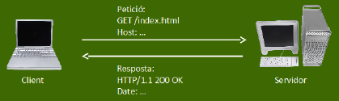

Servicio web
2ASIR - Implantación de aplicaciones web
Profesor: Roberto Tubilleja Calvo
Introducción
El protocolo HTTP (Hypertext Transfer Protocol) es el protocol base de www. Se trata de un protocolo orientado a conexión.
HTTP sigue el modelo de peticiones y respuestas de la arquitectura cliente-servidor.
Utiliza por defecto el puerto 80 para las conexiones.
HTTPS es una variante de HTTP que utiliza el protocolo de seguridad SSL (Secure Socket Layer) que cifra y autentica el tránsito de información entre cliente y servidor. Puerto 443.
Al ser orientado a conexión, todo intercambio HTTP sobre TCP pasa por tres fases:
◦Establecimiento: se abre la conexión TCP entre cliente y servidor antes de enviar ningún dato.
◦Transferencia: se envían la petición y la respuesta HTTP a través de la conexión ya establecida.
◦Finalización: se cierra la conexión TCP una vez completado el intercambio.
HTTP I
Existen distintas versiones del protocolo HTTP:
▪HTTP 1.0: primera versión del protocolo. ¡En esta versión se necesitaba una nueva conexión para cada petición!
▪HTTP 1.1: Conexiones persistentes, es decir, tenemos varias peticiones y respuestas en una misma conexión.
▪.....

HTTP II
El funcionamiento de HTTP es el siguiente:
‣El cliente establece una conexión TCP hacia el servidor (puerto HTTP).
‣Envía una orden HTTP de petición de recurso(GET).
‣El servidor responde por la misma conexión con los datos solicitados.
‣El cliente o el servidor finalizan la conexión TCP una vez completado el intercambio.

HTTP - URL
Partimos de una URL del tipo:
http://host [:puerto][/ruta [?parámetro=valor [&parámetro...]]]
Por ejemplo: http://www.google.es/index.html
▪http:// → indica el protocolo
▪www.google.es → indica el host
▪no se especifica el puerto, por tanto, coge el de por defecto: 80
▪/index.html → la ruta hasta el recurso que queremos obtener
▪en este caso no se pasan parámetros
Respuestas HTTP I
Cuando se envía una petición HTTP, el servidor la procesa y responde.
Según el código devuelto, el servidor nos indicará cual es el estado de la petición:
‣ 1XX → petición en proceso. Informativas
‣ 2XX → petición correcta. Se ha procesado correctamente
‣ 3XX → redirección
‣ 4XX → error del cliente
‣ 5XX → error del servidor
Respuestas HTTP II
| Respuestas HTTP | |
|---|---|
| 200 | OK – Todo ha ido correctamente |
| 202 | Petición aceptada pero no completada |
| 301 | La petición será redirigida a otra URL |
| 400 | Solicitud/sintaxis incorrecta |
| 401 | No autorizado |
| 404 | No encontrado. No se ha encontrado el recurso solicitado |
| 405 | Método no permitido |
| 500 | Error interno. Servidores de aplicaciones y contenidos dinámicos |
| 501 | No implementado. El servidor no soporta la funcionalidad requerida |
Fin de la unidad
Protocolo HTTP